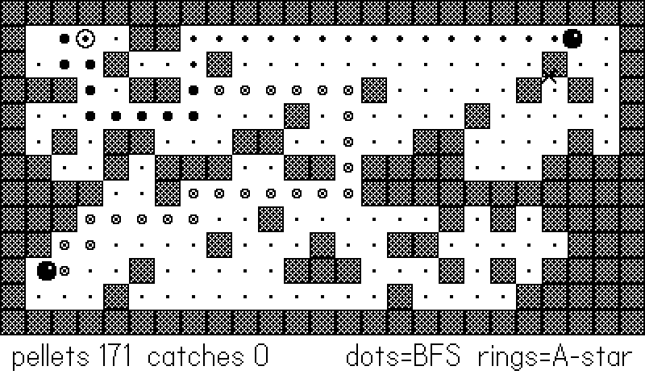
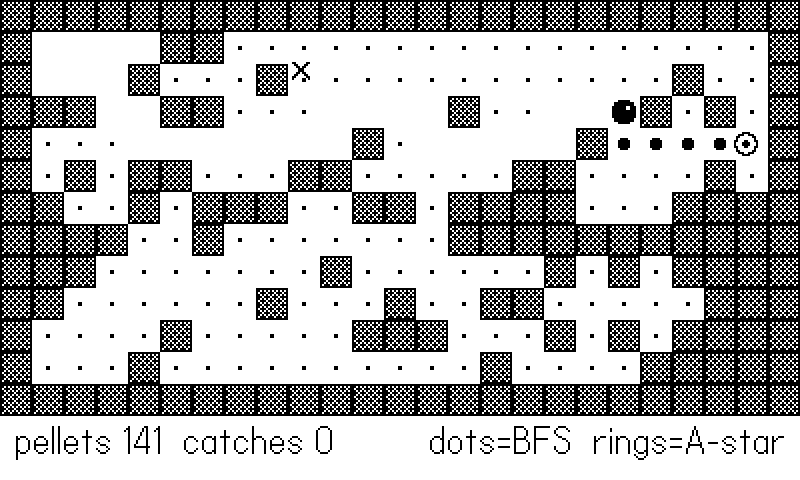

16 Enemies, Pathfinding, and Bots
An enemy that walks into walls is scenery. An enemy that corners you in a dead end you chose badly is a game. The distance between the two is pathfinding, and this chapter covers both ways to get it on a Playdate: a hand-rolled breadth-first search you will understand down to the last table index, and the SDK’s built-in A* in playdate.pathfinder. Then it turns the same machinery around and points it at the player’s chair — because the autopilots that smoke-test every game in this book (and captured every figure in it) are enemies AI with the controller in their hands, and they fail in instructive ways that sixty shipped games have already paid for.
The example is a maze chase. A random-but-connected maze fills the screen; a player bot vacuums pellets, plotting its route with BFS; two ghosts hunt it — one on hand-rolled BFS, one on playdate.pathfinder’s A* — and a moth glides over the walls on steering behaviors, for the enemies that don’t live on a grid. The critical feature: both ghosts draw their current plan on the maze, dots for BFS and rings for A* (Figure 16.1). Watching two pathfinders think in public teaches more than any diagram of one.
16.1 Grid BFS from first principles
Breadth-first search answers “what is the shortest route from here to there?” on any grid where steps cost the same. It explores outward from the start in rings — all cells one step away, then two, then three — so the first time it touches the goal, it got there by a shortest path. Three ingredients:
- a queue of cells to visit, oldest first;
- a parent map recording, for each visited cell, which cell first reached it (this doubles as the visited set);
- a walk-back: once the goal is found, follow parents from goal back to start, and you have the path in reverse.
Here is the example’s implementation, complete:
-- BFS from (sc, sr) to the nearest cell where goalfn is true.
-- A queue with a head index (no removals), a parent map for
-- the walk-back, and early exit on the first goal reached.
function Path.bfs(sc, sr, goalfn)
local function key(c, r) return r * 100 + c end
local parent = { [key(sc, sr)] = -1 }
local q, head = { { sc, sr } }, 1
local goal
while q[head] do
local cc, cr = q[head][1], q[head][2]
head = head + 1
if goalfn(cc, cr)
and not (cc == sc and cr == sr) then
goal = { cc, cr }
break
end
for _, d in ipairs(DIRS) do
local nc, nr = cc + d[1], cr + d[2]
if Maze.isOpen(nc, nr)
and not parent[key(nc, nr)] then
parent[key(nc, nr)] = key(cc, cr)
q[#q + 1] = { nc, nr }
end
end
end
if not goal then return nil end
-- walk the parent chain back to build the full path
local path = {}
local k = key(goal[1], goal[2])
while k ~= -1 do
table.insert(path, 1, { k % 100, k // 100 })
k = parent[k]
end
return path -- path[1] = start, path[2] = first step
endDetails that matter, in order of how often their absence has caused bugs. The queue uses a head index instead of table.remove(q, 1) — removing from the front of a Lua array shifts every element, turning a linear search quadratic; bumping head is free, and the “dead” front entries are garbage-collected with the queue. Cells are marked in parent when enqueued, not when visited, or the same cell enters the queue from every neighbor. And the goal test takes a function, so the same BFS serves “reach the player,” “reach any pellet,” or “reach any cell where X” without modification — the same pluggable-predicate move as isSolid in Chapter 14.
The key encoding trick is one integer per cell: r * 100 + c packs both coordinates into a table key that is cheap to hash and trivial to unpack (% 100 and // 100). The rival AI and the smoke autopilot in Clam Jumper share exactly this BFS; its version returns the first step directly, unpacking as it walks back:
-- clamjumper/source/util.lua:32 (Util.pathNext, abridged)
if not goal then return nil end
-- walk parents back until the step off the start tile
local cc, cr = goal[1], goal[2]
while true do
local p = parent[key(cc, cr)]
if p == key(sc, sr) or p == -1 then
return cc - sc, cr - sr, goal[1], goal[2]
end
cc, cr = p % COLS, p // COLS
endThat is the first-step extraction: an actor re-plans every time it reaches a cell, so it only ever needs step one of the plan. Returning the whole path (as the example does) costs a little more and buys the overlay figures; in a game, return whichever your consumers need.
16.1.1 One field, many queries
There is a third shape of BFS worth knowing: run it from a source with no goal at all and keep the whole distance table. The tiles engine does exactly this — Phys.bfs (tiles/core/tphys.lua:104) returns dist[ty][tx] for every reachable cell, and its header comment tells you why: “Shared by enemy chase AI and every autopilot.” Root the field at the player once per frame, and then any number of enemies answer their movement question with four table lookups each:
-- tiles/core/tphys.lua:148
-- first step from (sx,sy) toward smaller values in a BFS
-- field rooted at the target
function Phys.descend(dist, sx, sy)
local best = dist[sy] and dist[sy][sx]
if not best then return nil end
local bx, by
local dirs = { { 1, 0 }, { -1, 0 }, { 0, 1 }, { 0, -1 } }
for i = 1, 4 do
local nx, ny = sx + dirs[i][1], sy + dirs[i][2]
local d = dist[ny] and dist[ny][nx]
if d and d < best then
best, bx, by = d, dirs[i][1], dirs[i][2]
end
end
return bx, by
endChasing is “step to a neighbor with a smaller distance.” Fleeing is the same function with the comparison flipped — step to a larger distance and you get credible Pac-Man scatter behavior for free. One search, rooted at the target, serves ten enemies for the price of one; ten searches rooted at ten enemies is how grid AI gets expensive. When your enemy count grows past two or three, flip the search around.
This maze is 25×13 = 325 cells. A full BFS touches each open cell once — a few hundred table operations, tens of microseconds on the device. The example re-plans three searches per cell-arrival (player and both ghosts… one of them via the C-side pathfinder) and does not register on the frame budget. Grid pathfinding earns its reputation for cost at thousands of cells with dozens of agents; at Playdate scales, re-plan freely and keep the code simple.
16.2 Flood fill: connectivity as a guarantee
Run BFS with no goal until the queue empties and you get a flood fill: the set of every cell reachable from the start. That turns “is this maze solvable?” from a prayer into a post-processing step — generate walls randomly, flood from the player’s corner, and seal anything the flood never reached:
-- flood fill from (sc, sr): which open cells are reachable?
local function floodFrom(sc, sr)
local seen = { [sr * 100 + sc] = true }
local q, head = { { sc, sr } }, 1
local dirs = { { 1, 0 }, { -1, 0 }, { 0, 1 }, { 0, -1 } }
while q[head] do
local cc, cr = q[head][1], q[head][2]
head = head + 1
for _, d in ipairs(dirs) do
local nc, nr = cc + d[1], cr + d[2]
if Maze.isOpen(nc, nr)
and not seen[nr * 100 + nc] then
seen[nr * 100 + nc] = true
q[#q + 1] = { nc, nr }
end
end
end
return seen
end-- Scatter walls, then SEAL any open cell the player can't
-- reach. The surviving open set is always one connected region,
-- so no actor or pellet can ever be walled off.
function Maze.generate()
for attempt = 1, 20 do
grid = {}
for r = 1, Maze.ROWS do
grid[r] = {}
for c = 1, Maze.COLS do
local border = (r == 1 or r == Maze.ROWS
or c == 1 or c == Maze.COLS)
grid[r][c] = not border
and math.random() >= 0.24
end
end
-- force the spawn corners (and elbows) open
for _, s in ipairs(Maze.spawns) do
grid[s[2]][s[1]] = true
grid[s[2]][s[1] + s[3]] = true
grid[s[2] + s[4]][s[1]] = true
end
local seen = floodFrom(2, 2)
for r = 1, Maze.ROWS do
for c = 1, Maze.COLS do
if grid[r][c] and not seen[r * 100 + c] then
grid[r][c] = false -- seal it off
end
end
end
local ok = true
for _, s in ipairs(Maze.spawns) do
if not grid[s[2]][s[1]] then ok = false end
end
if ok then break end
end
Maze.prerender()
endAfter sealing, the open set is one connected region by construction: every pellet is reachable, every ghost can reach the player, and no actor can be born walled-in. Clam Jumper introduced this pattern (clamjumper/source/maze.lua:21, floodFrom) after its coral reefs kept generating pockets that trapped clams the player could never collect — the autopilot found the flaw, and the flood fill fixed the generator rather than patching the symptom.
16.3 The SDK’s pathfinder: A* for free
playdate.pathfinder is the SDK’s graph-search module — A* running in C, which finds the same shortest paths as BFS but explores far fewer cells by using a heuristic (default: manhattan distance) to push toward the goal first. The convenience constructor maps perfectly onto tile games:
-- Build the SDK graph once per maze: one node per cell, walls
-- excluded via the 1/0 includedNodes array (row-major).
function Path.buildGraph()
local included = {}
for r = 1, Maze.ROWS do
for c = 1, Maze.COLS do
included[#included + 1] =
Maze.isOpen(c, r) and 1 or 0
end
end
Path.graph = playdate.pathfinder.graph.new2DGrid(
Maze.COLS, Maze.ROWS, false, included)
endnew2DGrid(width, height, allowDiagonals, includedNodes) builds one node per cell, numbered 1 to width*height in row-major order, with x, y set to the grid position. includedNodes is a flat array of 1s and 0s — walls get 0 and receive no connections, though the node still exists, which makes later edits easy. Two costs to know about: connection weights default to 10 for orthogonal moves and 14 for diagonal (≈ 10√2, so diagonals price honestly), and the graph is built once per maze, not per query.
Querying it:
-- A* between two cells. findPath returns pathfinder.node
-- objects carrying x, y -- convert back to our {c, r} form.
function Path.astar(sc, sr, tc, tr)
local g = Path.graph
local a = g:nodeWithXY(sc, sr)
local b = g:nodeWithXY(tc, tr)
if not a or not b then return nil end
local nodes = g:findPath(a, b)
if not nodes then return nil end
local path = {}
for i, n in ipairs(nodes) do
path[i] = { n.x, n.y }
end
return path
endfindPath returns an array of pathfinder.node objects — read .x/.y straight off them — or nil when no path exists, and the example converts immediately back into its own {c, r} form so the rest of the game has exactly one path representation. The optional extras: a custom heuristic function (startNode, goalNode) -> estimate (the default manhattan estimate needs the nodes’ x, y set, which new2DGrid does for you), findPathToGoalAdjacentNodes (stop next to the goal — right for melee chasers, and the only way to path to a target standing on an excluded node), an ID-flavored twin findPathWithIDs if you’d rather track integers than node objects, and a whole mutation API (addConnections, removeNodeWithXY, node:addConnection with per-edge weights) for doors that open and bridges that collapse. Weights are worth a second look even on a static map: A* prefers a longer path of lighter edges, so pricing the edges into a hazard tile at 30 instead of 10 gives you enemies that walk around fire — and through it when there’s no other way — without a line of new logic.
The pathfinder graph is a copy of your map, and nothing keeps them in sync. Open a gate in your tile grid and the A* ghost still walks around it — or worse, a wall you added is still walkable — with no error anywhere. Rebuild the graph (or edit the affected node’s connections) in the same function that mutates the map, exactly as the example’s rebuild() regenerates both together. If your ghosts ignore new walls, this is why.
So which one? BFS when you want zero dependencies, a goal-predicate (“nearest pellet”) rather than a fixed target, or the distance-field variants that answer many queries at once. The SDK pathfinder when you want weighted edges, diagonals, big maps, or C speed without writing C. In the example the ghosts’ overlays lie on top of each other most frames — on an unweighted grid the algorithms agree on length and differ only in tie-breaking, which is exactly what Figure 16.1 shows.

-- Draw each ghost's CURRENT plan on the maze: solid dots for
-- the BFS ghost, hollow rings for the A* ghost. Watching the
-- two overlays diverge and reconverge is the whole figure.
local function drawPath(path, hollow)
if not path then return end
for i = 2, #path do
local x, y = Maze.px(path[i][1], path[i][2])
if hollow then
gfx.drawCircleAtPoint(x, y, 3)
else
gfx.fillCircleAtPoint(x, y, 2)
end
end
endThe chase logic itself is symmetric — each ghost re-plans on every cell arrival, stores its full path for drawing, and takes step two (step one is the cell it is standing on):
local function ghostNext(g, useAstar)
if useAstar then
g.path = Path.astar(g.c, g.r, player.c, player.r)
else
g.path = Path.bfs(g.c, g.r, function(c, r)
return c == player.c and r == player.r
end)
end
if g.path and g.path[2] then return g.path[2] end
return nil
end16.4 Cells for logic, pixels for eyes
One structural decision makes everything above simpler than it looks: actors in the example live on cells, not pixels. An actor is “at (c, r), heading to (nc, nr), prog frames into the trip”; all AI — pathfinding, pellet eating, catch detection — operates on the integer cell coordinates, and the pixel position is derived cosmetically by interpolating between the two cell centers at draw time. Decisions happen only at cell arrival, which means an actor can never be halfway into a wall, “which cell am I in?” never needs rounding rules, and catches compare two pairs of integers. The alternative — pixel-positioned actors constantly re-deriving their grid cell — works, as Chapter 14 showed for physics-driven movement, but for grid AI it reintroduces every alignment bug the grid was supposed to prevent.
Speed then becomes frames per cell, and the pursuit dynamics fall out of one ratio: the player crosses a cell in 5 frames, the ghosts in 7. The player escapes down straightaways, the ghosts gain in corners (re-planning is free; running is not), and a two-ghost pinch is genuinely dangerous — all from two integers. Tune chase games here first; a speed ratio does more than any cleverness in the planner.
16.5 Steering: enemies off the grid
Not everything lives on tiles. For enemies that fly, drift, or swim, the classic steering behaviors produce organic motion from three tiny rules, each computing a desired direction and turning the actor gradually toward it:
- seek: turn toward the target;
- flee: seek with the vector reversed;
- wander: add a little random jitter to the heading.
The gradual turn — a capped radians-per-frame budget — is the entire trick. An actor that can only bend its path sweeps into curves, overshoots, and circles; it reads as alive because, like anything alive, it has momentum. The example’s moth seeks the player, spooks and flees when it gets close, and wanders throughout:
-- Steering for non-grid enemies: the moth ignores walls and
-- flies by heading. Seek = turn toward the target, capped at
-- a max turn rate; flee = seek with the vector reversed;
-- wander = random jitter on top so the flight looks alive.
local MOTH_SPD <const> = 55 -- px/s
local TURN <const> = 0.09 -- max turn, radians per frame
local function steerMoth()
local px, py = actorPx(player)
local dx, dy = px - moth.x, py - moth.y
if moth.flee > 0 then
moth.flee = moth.flee - 1
dx, dy = -dx, -dy -- flee: seek, reversed
elseif dx * dx + dy * dy < 900 then
moth.flee = 45 -- spooked: run for 1.5s
Harness.count("spooks")
end
local want = math.atan(dy, dx)
local diff = want - moth.h
-- wrap to [-pi, pi] so it turns the short way round
while diff > math.pi do diff = diff - 2 * math.pi end
while diff < -math.pi do diff = diff + 2 * math.pi end
diff = math.max(-TURN, math.min(TURN, diff))
moth.h = moth.h + diff + (math.random() - 0.5) * 0.06
moth.x = moth.x + math.cos(moth.h) * MOTH_SPD * DT
moth.y = moth.y + math.sin(moth.h) * MOTH_SPD * DT
moth.x = math.max(10, math.min(390, moth.x))
moth.y = math.max(10, math.min(198, moth.y))
endThe angle-wrapping loop is the classic trap: without normalizing want - heading into [−π, π], an actor at heading 179° chasing a target at −179° turns 358° the long way round. Every steering bug you will ever write is this bug. The shipped games use steering for their off-grid hunters — Peckish’s gull circles its mark before committing to a dive, and the crabs wander the wet sand between sprints — while grid logic drives anything that must respect walls.
16.6 Waves and ramps
Enemy placement over time is a system too, though a small one. The proven shape from the arcade-style games: spawn enemies in waves — a data table per wave holding a count, a spawn interval, and a composition ({ crabs = 4, gulls = 1, every = 45 } reads better than any code that computes it) — consumed by a single spawn timer that counts frames and pops the next entry. Keep three rules. Spawn off-screen or far from the player (the flood-fill’s reachable set doubles as a legal-spawn list; filter it by distance). Announce the wave (a one-second banner is cheap and turns raw difficulty into drama). And ramp by deriving the numbers from a wave index — never by mutating global state in place. Clam Jumper’s generator shows the pattern in miniature: each new reef derives its wall density as C.CORAL_DENSITY + math.min(reef * 0.01, 0.1) — a function of the level number, capped, so the ramp has a ceiling the design was actually tested at. Derive, cap, and keep the difficulty function in one place; a ramp scattered across five files cannot be tuned.
16.7 Autopilot design: the same AI, pointed at the chair
Here is this book’s recurring move: the player bot in this example is not test scaffolding bolted on afterward — it is an AI agent built from the chapter’s own parts (BFS to the nearest pellet), wired in through the input seam from Chapter 9. Three lessons, each learned the hard way across the shipped catalog and recorded in the development guide, separate autopilots that find bugs from autopilots that are bugs.
Detect stuckness by goal progress, not movement. The obvious stuck check — “has the bot moved lately?” — fails exactly when you need it: a bot grinding along a wall, or orbiting an unreachable goal, moves constantly while achieving nothing. Track the thing that matters instead: best distance-to-goal reached, or best x attained in a runner. The example’s player does precisely this, and answers stuckness with the third lesson:
-- Goal-progress stuck detection (the PLAYDATE-GUIDE lesson):
-- movement-based checks fail for wall-followers, so track the
-- best path length seen instead. No improvement for eight
-- decisions = boxed in = take a random wander burst.
local bestLen, staleCount, wander = math.huge, 0, 0
local function playerNext()
if wander > 0 then
wander = wander - 1
local opts = {}
for _, d in ipairs({ { 1, 0 }, { -1, 0 },
{ 0, 1 }, { 0, -1 } }) do
local nc, nr = player.c + d[1], player.r + d[2]
if Maze.isOpen(nc, nr) then
opts[#opts + 1] = { nc, nr }
end
end
return opts[math.random(#opts)]
end
local path = Path.bfs(player.c, player.r,
function(c, r) return pellets[r][c] end)
if not path then return nil end
if #path < bestLen then
bestLen, staleCount = #path, 0
else
staleCount = staleCount + 1
if staleCount >= 8 then
staleCount, bestLen = 0, math.huge
wander = 3
Harness.count("wanders")
end
end
return path[2]
endWhen boxed in, wander-burst. A stuck bot that keeps re-running the same deterministic logic re-makes the same decision forever. A short burst of random moves — three cells here — breaks the symmetry cheaply, after which normal planning resumes from somewhere new. (Grinding at the wall harder is what the deterministic logic already tried.)
Give area weapons a stand-off distance. Not applicable to pellets, but paid for in blood elsewhere: an autopilot with a bomb, a lob, or any area-of-effect tool must check for friendlies (itself included) inside the blast radius and hold distance from its own target, or it will clear the level by dying — a lesson the shipped bombers and lobbers each paid for before the stand-off check became house style.
The point of an autopilot is to exercise code paths, not to win. But when a competent bot cannot reach the objective, ask whether a human could: the goal-progress metric that keeps the bot honest also measures your level design. Unreachable collectibles and doors-without-keys in the shipped games were found exactly this way — the bot’s failure was the bug report.
Figure 16.2 shows the full system mid-game: pellets thinned out where the player has swept, both ghost plans converging, the moth mid-flutter, and the HUD counting catches.

16.8 What you know now
- BFS is a head-indexed queue, a parent map keyed by packed coordinates, and a walk-back; mark cells when enqueued, and take a goal predicate instead of a fixed target.
- First-step extraction (
clamjumper’sUtil.pathNext) is all a re-planning actor needs; full paths are for overlays and debug draws. - Flood fill turns maze generation into a guarantee: seal what the flood can’t reach and the open set is connected by construction.
playdate.pathfinder.graph.new2DGridbuilds a C-speed A* grid (weights 10/14,includedNodesfor walls);findPathreturns nodes ornil— and the graph must be rebuilt when the map changes.- Steering is seek/flee/wander under a capped turn rate; normalize your angle differences or turn the long way round.
- Autopilots are enemy AI pointed at the chair: measure goal progress (not movement), wander-burst when boxed in, and give area weapons a stand-off distance.
- Both halves scale up in Part VII: the shared BFS field — one flood fill that every chaser reads — in Chapter 22, and the autopilot as a written walkthrough rather than a steering behavior in Chapter 25.
The ghosts can hunt, the bot can play all night — but the moment the Playdate powers down, everything it earned evaporates. Chapter 17 makes progress stick.